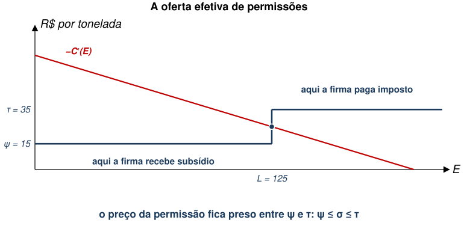
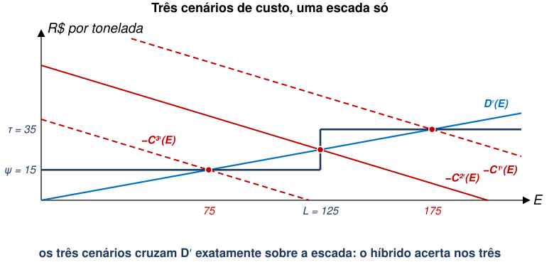
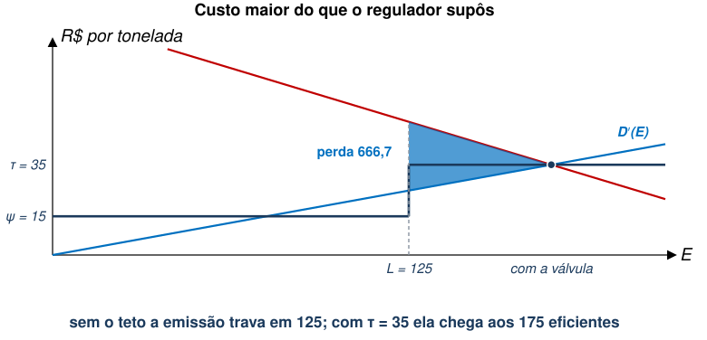
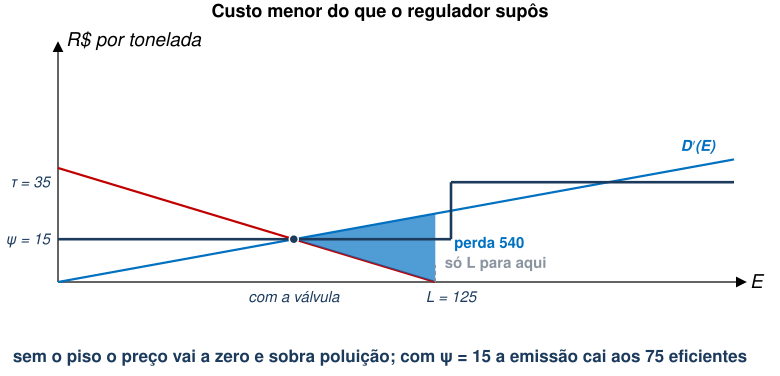
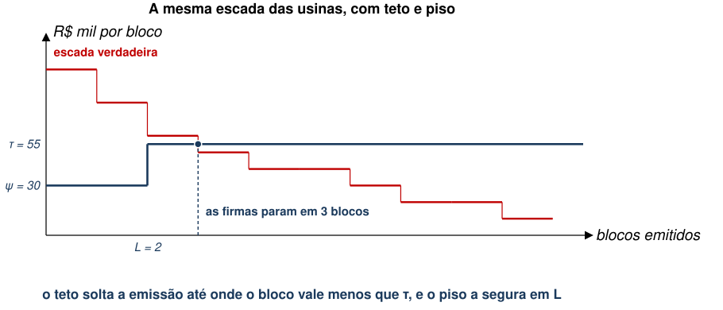

EAE1317 — Economia do Meio Ambiente e dos Recursos Naturais
2026-09-01
Ficou a pergunta: se cada instrumento tem um caso ruim, por que escolher um só?
Referência: Phaneuf e Requate, cap. 4
1. Prescrever o regulador diz o que fazer: tecnologia obrigatória ou limite de emissão por fonte.
2. Precificar o regulador põe um preço na emissão: imposto ou subsídio.
3. Limitar quantidade o regulador fixa o total e deixa o mercado repartir permissões.
4. Informar o regulador informa população com inventários de emissão, selos e certificações.
Tratamos de instrumentos de quantidade e preço separadamente.
Uma terceira alternativa é misturar ambos os instrumentos (Roberts e Spence 1976).
Verificaremos se a combinação de ambos os instrumentos ajuda a diminuir a perda de eficiência.
Suponha o seguinte instrumento de política.
Formalmente, temos o custo total da firma igual a:
\[T{C}_{j}=\begin{cases}{C}_{j}\left({e}_{j}\right)+\sigma \bar{e}_{j}+\tau \left({e}_{j}-\bar{e}_{j}\right), & \text{se } {e}_{j}\geq \bar{e}_{j} \\[4pt] {C}_{j}\left({e}_{j}\right)+\sigma \bar{e}_{j}+\psi \left({e}_{j}-\bar{e}_{j}\right), & \text{se } {e}_{j}\leq \bar{e}_{j}\end{cases}\]
Qual é o problema de otimização desta firma?
\[\min_{{e}_{j},\bar{e}_{j}} T{C}_{j}\]
Como este instrumento está influenciando a decisão da firma?
Se \(\sigma >\tau\), o que as firmas fazem?
E se \(\sigma <\psi\), o que as firmas fazem?
Assim, conclui-se que:
\[\psi \leq \sigma \leq \tau\]
Essa restrição implica em três resultados possíveis para as firmas:
Essa restrição implica três resultados possíveis para as firmas:

Este tipo de instrumento garante algumas “válvulas de escape”.
Vejamos como esse instrumento afeta o caso de custo de abatimento desconhecido.
Primeiro, veremos que o mecanismo híbrido traz flexibilidade.
\[{{C}^{1}}^{′}\left(E\right)<{{C}^{2}}^{′}\left(E\right)<{{C}^{3}}^{′}(E)\]
(Cada uma vai cruzar o dano marginal exatamente sobre a escada.)

No gráfico anterior, atingimos a solução eficiente em casos específicos.
Vejamos como muda a perda de eficiência no caso híbrido.


Em duplas, 6 minutos. As mesmas usinas da aula passada, e o mesmo regulador que acha que a B é igual à A, então emite \(L=2\) permissões.
| 1º bloco | 2º | 3º | 4º | 5º | |
|---|---|---|---|---|---|
| Usina A | 10 | 20 | 30 | 40 | 50 |
| Usina B | 20 | 40 | 60 | 80 | 100 |

| Blocos | Perda com dano 45 | Perda com o degrau | Pior caso | |
|---|---|---|---|---|
| Só permissões, \(L=2\) | 2 | 20 | 15 | 20 |
| Só imposto, \(\tau =45\) | 4 | 0 | 250 | 250 |
| Híbrido, \(L=2\), \(\psi =30\), \(\tau =55\) | 3 | 5 | 0 | 5 |
EAE1317 — Economia do Meio Ambiente e dos Recursos Naturais